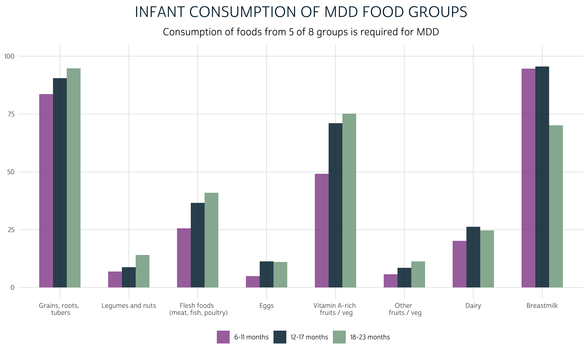
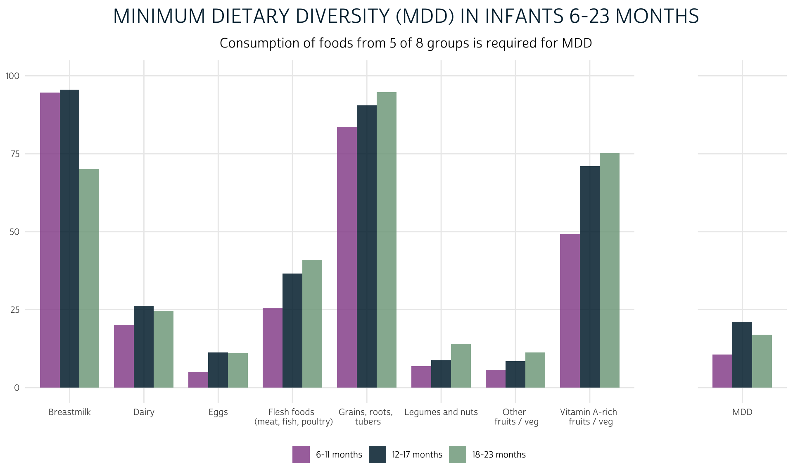
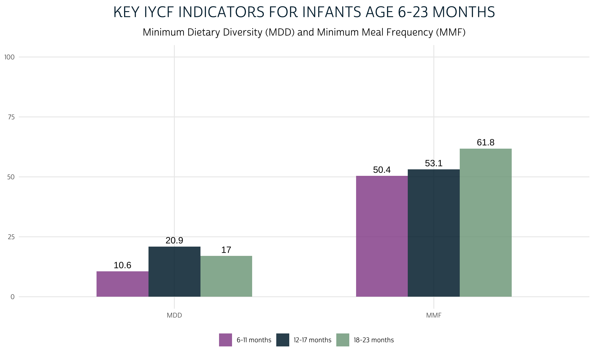
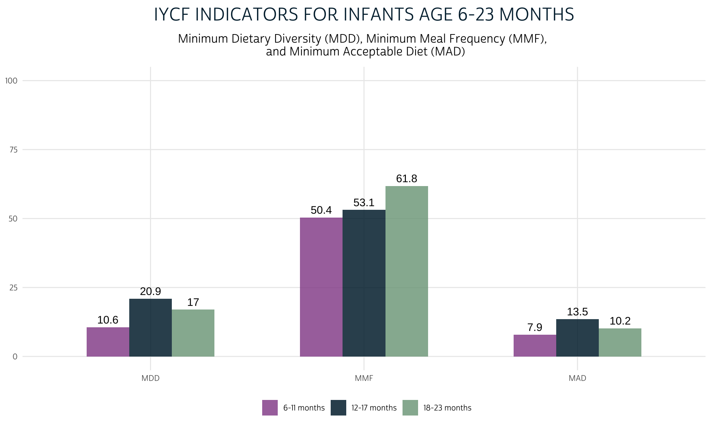

Use WHO guidelines to calculate Minimum Dietary Diversity (MDD), Minimum Meal Frequency (MMF), and Minimum Acceptable Diet (MAD).
Global indicators for Infant and Young Child Feeding (IYCF) practices have been used in large-scale nutrition surveys like the Demographic and Health Surveys (DHS) and Multiple Indicator Cluster Surveys (MICS) since 2008. These indicators provide benchmark dietary standards necessary for healthy growth and development in children during the first two years of life.
In 2017 and 2018 - the same years that PMA nutrition surveys were fielded in Burkina Faso and Kenya - the World Health Organization (WHO), UNICEF, and other international aid organizations convened an inter-agency review of IYCF guidelines. Their findings included recommendations for revised measures outlined here.
In this post, we’ll highlight three of the most commonly used IYCF indicators for children age 6-23 months, and we’ll show to calculate them with dietary recall data from the 2017 PMA nutrition survey from Burkina Faso. We’ll use the revised WHO definitions for:
While you’ll be able to use the code in this post for any of the four PMA nutrition samples, we’ll focus on a data extract containing only the Burkina Faso 2017 sample. We’ve selected cases marked “Females and Children with Nutrition Information,” dropping all other household members from the file.
We’ll load the data extract into R with the packages ipumsr and tidyverse.
library(ipumsr)
library(tidyverse)
dat <- read_ipums_micro(
ddi = "data/pma_00002.xml",
data = "data/pma_00002.dat.gz"
)
For all graphs in this post, we’ll use a custom ggplot2 theme we’ll call theme_pma. Check out this post for more information about how to develop and use a graphics theme like this one:
sysfonts::font_add(
family = "cabrito",
regular = "../../fonts/cabritosansnormregular-webfont.ttf"
)
showtext::showtext_auto()
theme_pma <- function(title, subtitle){
components <- list(
theme_minimal() %+replace%
theme(
text = element_text(family = "cabrito", size = 10),
plot.title = element_text(
size = 18, color = "#00263A", margin = margin(b = 10)
),
plot.subtitle = element_text(size = 12, margin = margin(b = 10)),
legend.title = element_blank(),
panel.grid.minor = element_blank(),
axis.ticks = element_blank(),
legend.position = "bottom",
panel.spacing = unit(4, "lines"),
strip.text = element_blank()
),
scale_fill_manual(
values = alpha(
alpha = .85,
colour = c(
"#98579B", # PMA Pink
"#00263A", # IPUMS Navy
"#81A88D" # Green
)
)
),
labs(
title = toupper(title),
subtitle = subtitle,
x = NULL,
y = NULL,
fill = NULL
),
ylim(0, 100)
)
}
The IYCF indicators we’ll calculate below only apply to infants who were between 6 and 23 months of age on the day of the nutrition interview. We know the birth month KIDBIRTHMO and year KIDBIRTHYR for each sampled child, but the interview month INTFCQMON and year INTFCQYEAR are only reported on the record for the woman who responded on their behalf (usually the child’s mother). In order to calculate each child’s age, we’ll need to use the procedure outlined in our last post to identify the mother for each child living in a household where nutrition surveys were administered in more than one month.
To make this calculation easier, we’ll combine each month and year into a single century month code (CMC). Dates reported as a CMC reflect the number of months since January 1900:
\[CMC = 12*(Year – 1900) + Month\]
You’ll find CMC dates in many demographic surveys because they make it easy to measure the minimum passage of time between two events (particularly when the exact day is unknown). In our case, we’ll subtract the CMC code for each child’s birthdate KIDBIRTHCMC from the CMC code for the nutrition interview INTFCQCMC; we’ll then subtract one additional month to account for births that happened nearer to the end of the birth month than the date of the interview was to the end of the interview month.
For example, imagine a child born on January 1, 2017 and whose nutrition interview happened on February 1, 2017. The CMC code for their birthdate would be calculated as:
\[\begin{eqnarray} KIDBIRTHCMC &=& 12*(2017 – 1900) + 1 \\ &=& 1405 \end{eqnarray}\]
And the CMC code for their interview date would be:
\[\begin{eqnarray} INTFCQCMC &=& 12*(2017 – 1900) + 2 \\ &=& 1406 \end{eqnarray}\]
Suppose we calculate each child’s age in months KIDAGEMO by subtracting KIDBIRTHCMC from INTFCQCMC:
\[\begin{eqnarray} KIDAGEMO &=& INTFCQCMC - KIDBIRTHCMC \\ &=& 1406 - 1405 \\ &=& 1 \end{eqnarray}\]
This particular child aged one complete month between January 1 and February 1, so our calculation for KIDAGEMO works out. Unfortunately, this creates incorrect calculations for all of the children born after January 1, since they won’t have aged one complete month by February 1. In practice, we don’t know the precise day of either event; this is why we subtract an additional month in our calculation for KIDAGEMO, which reports each child’s minimum age in months.
\[\begin{eqnarray} KIDAGEMO &=& INTFCQCMC - KIDBIRTHCMC - 1\\ &=& 1406 - 1405 -1 \\ &=& 0 \end{eqnarray}\]
Note that all of the date variables contain special top-codes designating missing values; we’ll use dplyr::case_when to calculate CMC codes only for non-missing dates (all other cases will be marked NA automatically).
dat <- dat %>%
mutate(
KIDBIRTHCMC = case_when(
KIDBIRTHMO <= 12 & KIDBIRTHYR <= 2017 ~
12*(KIDBIRTHYR - 1900) + KIDBIRTHMO
),
INTFCQCMC = case_when(
INTFCQMON <= 12 & INTFCQYEAR <= 2017 ~
12*(INTFCQYEAR - 1900) + INTFCQMON
)
)
As we mentioned, the interview date is only located on the record for the woman in each household who provided nutrition information for herself and on behalf of each sampled child. As a result, INTFCQCMC is currently NA for each child.
dat %>% count(ELIGTYPE, INTFCQCMC)
# A tibble: 7 x 3
ELIGTYPE INTFCQCMC n
<int+lbl> <dbl> <int>
1 11 [Infant under age 2 (INF)] NA 2436
2 12 [Youngest aged 2-5 (YK)] NA 343
3 13 [Older aged 2-5 (OTK)] NA 1032
4 20 [Selected women aged 10-49 (WN)] 1410 3008
5 20 [Selected women aged 10-49 (WN)] 1411 1231
6 20 [Selected women aged 10-49 (WN)] 1412 253
7 20 [Selected women aged 10-49 (WN)] 1413 2Before we can calculate the age of each child KIDAGEMO, we need to match each child to the correct woman who provided responses on their behalf (usually their mother). Following the steps outlined in our last post, we’ll group the data by household HHID and then perform a rowwise search for each person in the sample. If that person is a woman aged 10-49 (ELIGTYPE == 20), we’ll leave INTFCQCMC as-is; otherwise, we’ll use these criteria to determine INTFCQCMC:
INTFCQCMC available.INTFCQCMC for the woman matched as the child’s mother.AGE and education level EDUCATT, return NA. In this case, the interview date for the child cannot be determined.dat <- dat %>%
select(
HHID,
PERSONID,
ELIGTYPE,
AGE,
AGEMOM,
EDUCATT,
EDUCATTMOM,
INTFCQCMC
) %>%
group_by(HHID) %>%
mutate(HH_DATA = list(cur_data())) %>%
ungroup() %>%
rowwise() %>%
mutate(INTFCQCMC = ifelse(ELIGTYPE == 20, INTFCQCMC, {
unique_dates <- HH_DATA %>%
filter(!is.na(INTFCQCMC)) %>%
distinct(INTFCQCMC) %>%
pull(INTFCQCMC)
ifelse(length(unique_dates) == 1, unique_dates, {
agemom <- AGEMOM
educattmom <- EDUCATTMOM
moms <- HH_DATA %>%
filter(AGE == agemom, EDUCATT == educattmom) %>%
pull(INTFCQCMC)
ifelse(length(moms) == 1, moms, NA)
})
})) %>%
ungroup() %>%
select(PERSONID, INTFCQCMC) %>%
right_join(dat %>% select(!INTFCQCMC), by = "PERSONID")
Let’s now check to see whether an interview date INTFCQCMC was determined for every child:
dat %>% count(ELIGTYPE, INTFCQCMC)
# A tibble: 14 x 3
ELIGTYPE INTFCQCMC n
<int+lbl> <dbl> <int>
1 11 [Infant under age 2 (INF)] 1410 1663
2 11 [Infant under age 2 (INF)] 1411 648
3 11 [Infant under age 2 (INF)] 1412 124
4 11 [Infant under age 2 (INF)] 1413 1
5 12 [Youngest aged 2-5 (YK)] 1410 236
6 12 [Youngest aged 2-5 (YK)] 1411 99
7 12 [Youngest aged 2-5 (YK)] 1412 8
8 13 [Older aged 2-5 (OTK)] 1410 746
9 13 [Older aged 2-5 (OTK)] 1411 231
10 13 [Older aged 2-5 (OTK)] 1412 55
11 20 [Selected women aged 10-49 (WN)] 1410 3008
12 20 [Selected women aged 10-49 (WN)] 1411 1231
13 20 [Selected women aged 10-49 (WN)] 1412 253
14 20 [Selected women aged 10-49 (WN)] 1413 2Success! Now, we can calculate the minimum age of every sampled child as KIDAGEMO.
dat <- dat %>% mutate(KIDAGEMO = INTFCQCMC - KIDBIRTHCMC - 1)
For the remainder of the post, we’ll focus on children who were at least 6 months of age defined by KIDAGEMO. Unfortunately, because precise ages are suppressed in the public IPUMS PMA dataset, we’ve rounded down and likely excluded some children who are, in reality, exactly 6 months of age. On the other hand, we’ll keep all children where INFCHECK indicates that the respondent confirmed that the child was under 24 months of age (regardless of their recorded birthdate).
dat <- dat %>% filter(KIDAGEMO >= 6 & INFCHECK == 1)
For convenience, we’ll also create a factor KIDAGEMO_3 that aggregates children into three groups:
WHO guidelines define Minimum Dietary Diversity (MDD) for children aged 6-23 months as consumption of food or beverages from at least 5 out of 8 defined food groups during the previous day. The PMA nutrition questionnaire for infants includes the following recall questions designed to meet the criteria for calculating MDD.
Are you currently breastfeeding ${under_2yr_child_name}?
[] Yes
[] No
Now I will ask you about liquids that ${under_2yr_child_name} had
yesterday during the day or at night. I am interested in whether your child had
the item I mention even if it was combined with other foods.
Proceed to the next screen when ready.
Did ${under_2yr_child_name} eat or drink:
[] Plain water
[] Juice or juice base
[] Soup
[] Milk such as canned milk, powder or fresh animal milk
[] Primary milk / infant formula or marketed infant formula (Breastmilk
substitute: NAN, Nativa, Guigoz, etc.)
[] Sweet drinks (sodas, zom-koom, bissap, ginger juice)
[] Other liquids
[] Yogurt
[] A commercially prepared baby formula, such as Cerelac, vitacasui, vitaline
[] Porridge
Now I would like to ask you about foods that ${under_2yr_child_name} had
yesterday during the day or at night. I am interested in whether your child had
the item I mention even if it was combined with other foods.
Proceed to the next screen when ready.
Did ${under_2yr_child_name} eat or drink:
[] Any fortified food like Cerelac?
[] Maize, rice, wheat, thick porridge, sorghum, bread, or other foods made from
grains?
[] Pumpkin, carrots, squash or yellow sweet potatoes that are yellow or orange
inside
[] Irish potatoes, yams, cassava, white sweet potatoes, or any other foods made
from roots?
[] Sukumu wiki or any dark green, leafy vegetables?
[] Ripe mangoes, pawpaw and fruits that are orange or yellow inside?
[] Any other fruits or vegetables?
[] Liver, kidney, heart or other organ meats?
[] Any meat, such as beef, pork, lamb, goat, chicken, duck?
[] Eggs?
[] Fresh or dried fish or shellfish?
[] Any foods made from beans, peas, lentils, or nuts?
[] Cheese or other food made from milk?
[] Sugary foods, jiggery (sukari nguru), mandaazi, donuts, cake, sweet biscuits
or candies?
[] Savory snacks like fried chips, crisps, samosas, or other fried foods?
[] Any other solid, semi-solid or soft food?IPUMS PMA provides harmonized indicators for each of the response options shown. We’ll group the relevant options into each of the 8 food groups defined in WHO guidelines for MDD.
For each variable, the response code 1 indicates that the infant consumed the food yesterday (in INFBFNOW, it indicates that the child is currently being breastfed, so we assume that they were breastfed yesterday); we’ll label these responses TRUE. Because we removed all non-infant cases from our extract, we can safely collapse all of the remaining responses together as FALSE (the only remaining cases that are “NIU (not in universe)” are infants in INFBFNOW who were never breastfed).
We’ll create one “group” variable with the prefix GRP_ for each food group. In cases where more than one harmonized variable is used, we’ll use dplyr::if_any to indicate whether any of the constituent foods was eaten yesterday.
dat <- dat %>%
mutate(
GRP_BF = INFBFNOW == 1,
GRP_NUT = INFYESTBEAN == 1,
GRP_EGG = INFYESTEGG == 1,
GRP_OTH = INFYESTOTHFRTVEG == 1,
GRP_GRAIN = if_any(
c(INFYESTFORM, INFYESTPORR, INFYESTGRAIN, INFYESTWHTVEG, INFYESTFORT),
~.x == 1
),
GRP_DAIRY = if_any(
c(INFYESTMILK, INFYESTYOG, INFYESTFORMP, INFYESTDAIRY),
~.x == 1
),
GRP_FLESH = if_any(
c(INFYESTFISH, INFYESTMEAT, INFYESTORG),
~.x == 1
),
GRP_VITA = if_any(
c(INFYESTYLWVEG, INFYESTGRNVEG, INFYESTYLWFRT),
~.x == 1
)
)
Let’s preview the proportion of infants in each age range from KIDAGEMO_3 who consumed foods from each of the 8 food groups yesterday. First, we’ll make a summary table with dplyr::summarise showing the proportion of children in each age range that consumed foods from each group:
grp_summary <- dat %>%
group_by(KIDAGEMO_3) %>%
summarise(across(starts_with("GRP"), ~100*mean(.x)))
grp_summary
# A tibble: 3 x 9
KIDAGEMO_3 GRP_BF GRP_NUT GRP_EGG GRP_OTH GRP_GRAIN GRP_DAIRY
<fct> <dbl> <dbl> <dbl> <dbl> <dbl> <dbl>
1 6-11 months 94.6 6.95 4.90 5.69 83.6 20.2
2 12-17 months 95.5 8.80 11.3 8.47 90.5 26.2
3 18-23 months 70.1 14.0 11.0 11.3 94.7 24.6
# … with 2 more variables: GRP_FLESH <dbl>, GRP_VITA <dbl>We’ll use tidyr::pivot_longer to create a long version of the table containing labels for each food group written exactly as we want them to appear on a ggplot.
grp_summary <- grp_summary %>%
pivot_longer(
!KIDAGEMO_3,
names_pattern = "GRP_(.*)",
names_to = c("group")
) %>%
mutate(
group = group %>%
as_factor() %>%
fct_relevel("GRAIN", "NUT", "FLESH", "EGG", "VITA", "OTH", "DAIRY") %>%
fct_recode(
`Grains, roots, \n tubers` = "GRAIN",
`Legumes and nuts` = "NUT",
`Flesh foods \n (meat, fish, poultry)` = "FLESH",
`Eggs` = "EGG",
`Vitamin A-rich \n fruits / veg` = "VITA",
`Other \n fruits / veg` = "OTH",
`Dairy` = "DAIRY",
`Breastmilk` = "BF"
)
)
grp_summary
# A tibble: 24 x 3
KIDAGEMO_3 group value
<fct> <fct> <dbl>
1 6-11 months "Breastmilk" 94.6
2 6-11 months "Legumes and nuts" 6.95
3 6-11 months "Eggs" 4.90
4 6-11 months "Other \n fruits / veg" 5.69
5 6-11 months "Grains, roots, \n tubers" 83.6
6 6-11 months "Dairy" 20.2
7 6-11 months "Flesh foods \n (meat, fish, poultry)" 25.6
8 6-11 months "Vitamin A-rich \n fruits / veg" 49.1
9 12-17 months "Breastmilk" 95.5
10 12-17 months "Legumes and nuts" 8.80
# … with 14 more rowsNow, we’ll create a grouped bar chart using the custom theme_pma created above.
grp_summary %>%
ggplot(aes(fill = KIDAGEMO_3, x = group, y = value)) +
geom_bar(width = .6, position = position_dodge(0.6), stat = "identity") +
theme_pma(
title = "Infant consumption of MDD food groups",
subtitle = "Consumption of foods from 5 of 8 groups is required for MDD"
)

Finally, we’ll calculate MDD. Because MDD combines indicators from multiple columns, we’ll use dplyr::c_across. If the total sum of values in all columns with the prefix GRP is at least 5, the child will meet the WHO criteria for “Minimum Dietary Diversity.”
dat <- dat %>%
rowwise() %>%
mutate(MDD = sum(c_across(starts_with("GRP"))) >= 5) %>%
ungroup()
We’ll add MDD as a facet to the plot we made above.
dat %>%
group_by(KIDAGEMO_3) %>%
summarise(group = "MDD", value = 100*mean(MDD), aside = TRUE) %>%
bind_rows(grp_summary %>% mutate(aside = FALSE)) %>%
ggplot(aes(fill = KIDAGEMO_3, x = group, y = value)) +
geom_bar(width = 0.8, position = position_dodge(0.8), stat = "identity") +
facet_grid(
cols = vars(aside),
scales = "free_x",
space = "free_x",
) +
theme_pma(
title = "Minimum Dietary Diversity (MDD) in Infants 6-23 Months",
subtitle = "Consumption of foods from 5 of 8 groups is required for MDD"
)

In order to achieve Minimum Meal Frequency (MMF), WHO guidelines recommend that an infant should receive solid, semi-solid, or soft foods multiple times during the previous day. The precise quantity of meals depends on the child’s age and whether they are breastfed:
Here, a “feeding” includes both meals and snacks, and “milk feeds” include “any formula (e.g. infant formula, follow-on formula, “toddler milk”) or any animal milk other than human breast milk, (e.g. cow milk, goat milk, evaporated milk or reconstituted powdered milk) as well as semi-solid and fluid/drinkable yogurt and other fluid/drinkable fermented products made with animal milk".1
Following this definition, we’ll first calculate the combined total number of MILKFEEDS from INFMILKNUM, INFYOGNUM, and INFFORMNUM; then, we’ll combine MILKFEEDS with INFFOODNUM appropriately for each child to create MMF.
For each NUM variable, we should be careful to note the reason why cases may appear “NIU (not in universe)”: these are children whose mother answered in a previous question that they did not consume the food yesterday. We’ll re-code these NIU cases as 0, rather than treat them as “missing.” On the other hand, we’ll assign the value NA to any child whose mother “did not know” whether they received the food yesterday.
dat <- dat %>%
mutate(
across(
c(INFMILKNUM, INFYOGNUM, INFFORMNUM, INFFOODNUM),
~case_when(.x < 90 ~ as.integer(.x))
),
INFMILKNUM = ifelse(INFYESTMILK == 0, 0, INFMILKNUM),
INFYOGNUM = ifelse(INFYESTYOG == 0, 0, INFYOGNUM),
INFFORMNUM = ifelse(INFYESTFORMP == 0, 0, INFFORMNUM),
INFFOODNUM = ifelse(INFFOODYEST == 0, 0, INFFOODNUM),
)
Now, we’ll calculate MILKFEEDS as a sum of the three constituent NUM variables for dairy products (unless all are NA, in which case we’ll return NA).
Finally, we’ll use case_when to apply separate calculations of MMF depending on whether the child is under 9 months, and whether they are breastfeeding.
dat <- dat %>%
mutate(MMF = case_when(
KIDAGEMO < 9 & GRP_BF ~ INFFOODNUM >= 2,
KIDAGEMO >= 9 & GRP_BF ~ INFFOODNUM >= 3,
!GRP_BF ~ INFFOODNUM + MILKFEEDS >= 4 & INFFOODNUM >= 1
))
Let’s compare the percentage of children who achieved MMF to the percentage who achieved MDD as shown above.
dat %>%
group_by(KIDAGEMO_3) %>%
summarise(MDD = 100*mean(MDD), MMF = 100*mean(MMF, na.rm = T)) %>%
pivot_longer(!KIDAGEMO_3) %>%
mutate(name = factor(name, levels = c("MDD", "MMF"))) %>%
ggplot(aes(fill = KIDAGEMO_3, x = name, y = value)) +
geom_bar(width = 0.6, position = position_dodge(0.6), stat = "identity") +
geom_text(
aes(label = round(value, 1)),
position = position_dodge(0.6),
vjust = -0.5
) +
theme_pma(
title = "Key IYCF Indicators for Infants Age 6-23 Months",
subtitle = paste(
"Minimum Dietary Diversity (MDD)",
"and Minimum Meal Frequency (MMF)"
)
)

Lastly, the WHO definition for Minimum Acceptable Diet (MAD) combines the two measures we’ve calculated above. MAD uses separate crieteria for breastfed and non-breastfed children:
We’ve already defined all of the intermediate variables needed to calculate MAD, so we’ll simply combine them as appropriate for breastfed and non-breastfed children with one final case_when function:
dat <- dat %>%
mutate(MAD = case_when(
GRP_BF ~ MMF & MDD,
!GRP_BF ~ MMF & MDD & MILKFEEDS >= 2
))
To wrap up, we’ll add MAD to the chart we made comparing MDD and MMF.
dat %>%
group_by(KIDAGEMO_3) %>%
summarise(
MDD = 100*mean(MDD),
MMF = 100*mean(MMF, na.rm = T),
MAD = 100*mean(MAD, na.rm = T)
) %>%
pivot_longer(!KIDAGEMO_3) %>%
mutate(name = factor(name, levels = c("MDD", "MMF", "MAD"))) %>%
ggplot(aes(fill = KIDAGEMO_3, x = name, y = value)) +
geom_bar(width = 0.6, position = position_dodge(0.6), stat = "identity") +
geom_text(
aes(label = round(value, 1)),
position = position_dodge(0.6),
vjust = -0.5
) +
theme_pma(
title = "IYCF Indicators for Infants Age 6-23 Months",
subtitle = paste(
"Minimum Dietary Diversity (MDD),",
"Minimum Meal Frequency (MMF), \n",
"and Minimum Acceptable Diet (MAD)"
)
)

In the coming weeks, we’ll show how researchers have used the IYCF indicators we’ve created to learn more about environmental and household factors that contribute to child malnutrition. We’ll also dig into supplementary data sources that connect food security outcomes with local agricultural conditions. In the meantime, make sure to connect with us on Twitter and let us know how you’re using PMA Nutrition data.